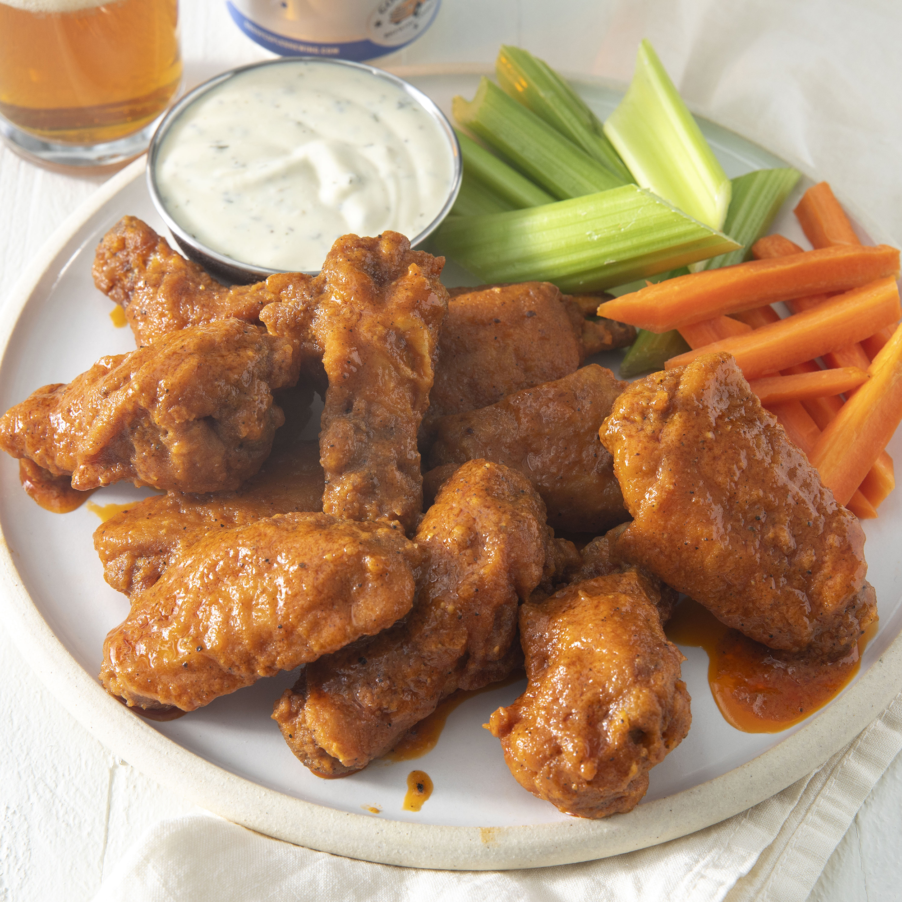

Wings Recipe

Restaurant-Style Buffalo Chicken Wings
This recipe was brought up and procured throughout the years by a family of wing connoisseurs. Pundits alike have raved this to be THE best recipe in the last decade rated best at-home wing receipe 2022 by Eater.com.
Ingredients
- 1/4 cup of all-purpose flour
- 1/4 teaspoon ground paprika
- 1/4 teaspoon salt
- 10 chicken wings
- 2 cups of vegetable oil for frying
- 1/4 cup of butter
- 1/4 cup of hot sauce
- 1 pinch of ground black pepper
- 1 pinch of garlic powder
Steps
- Whisk together flour, paprika, cayenne pepper, and salt in a small bowl.
- Place chicken wings in a single layer in a 9x13-inch glass baking dish. Sprinkle flour mixture over top and toss until wings are evenly coated. Cover and refrigerate for 1 to 1 1/2 hours.
- Add about 1 inch oil to a deep, heavy skillet; heat to 375 degrees F(190 degrees C).(The oil should be just enough to cover wings entirely).
- While the oil is coming to temperature, combine butter, hot sauce, pepper, and garlic powder in a small saucepan over low heat. Cook and stir until butter is melted and mixture is thoroughly blended. Remove from the heat and reserve for serving,
- Fry coated wings in the hot oil for 10 to 15 minutes or until the begin to crisp and turn brown. Maintain the oil temperature while cooking.
- Remove the wings from the oil and place on a paper towel-lined plate.
- Transfer wings to a platter and drizzle hot sauce over the top; or mix wings and hot sauce in a bowl until coated. Serve.